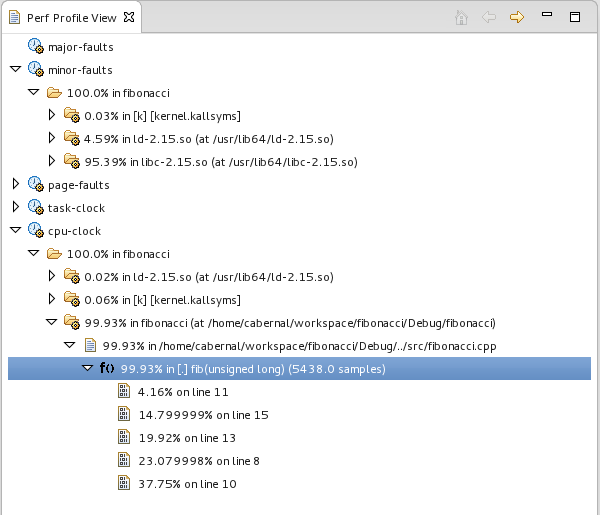
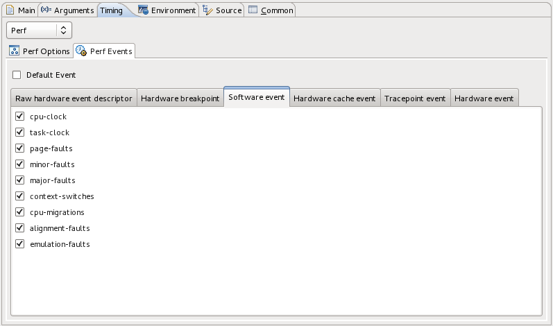

<?php  																														require_once($_SERVER['DOCUMENT_ROOT'] . "/eclipse.org-common/system/app.class.php");	require_once($_SERVER['DOCUMENT_ROOT'] . "/eclipse.org-common/system/nav.class.php"); 	require_once($_SERVER['DOCUMENT_ROOT'] . "/eclipse.org-common/system/menu.class.php"); 	$App 	= new App();	$Nav	= new Nav();	$Menu 	= new Menu();		include($App->getProjectCommon());    # All on the same line to unclutter the user's desktop'
	$pageTitle 		= "Linux Tools Project - Perf Support";
	$pageKeywords	= "linux, eclipse, downloads";
	$pageAuthor		= "Camilo Bernal";

	# Add page-specific Nav bars here
	# Format is Link text, link URL (can be http://www.someothersite.com/), target (_self, _blank), level (1, 2 or 3)
	# $Nav->addNavSeparator("My Page Links", 	"downloads.php");
	# $Nav->addCustomNav("My Link", "mypage.php", "_self", 3);
	# $Nav->addCustomNav("Google", "http://www.google.com/", "_blank", 3);

	# End: page-specific settings
	#

	# Paste your HTML content between the EOHTML markers!
	$html = <<<EOHTML

	<div id="midcolumn">
		<h1>$pageTitle</h1>

		<h2>Overview</h2>
		<p>
		The Linux Tools Perf plugin aims to bring the accurate and efficient profiling
		capabilities of Perf to Eclipse C/C++ Development Tools, providing an easy
		to use interface for inexperienced users while still maintaning a high degree  of 
		customizability for experienced users. Where the Perf plugin excels is in
		its rich visualization of the profiling data provided by the Perf tool,
		allowing users to quickly determine the parts of their code which use the most time.
		</p>

		<h2>Current Status</h2>
		<p>
		In conjunction with the CDT, the plugin can do the following:
		<ul>
          <li>Launch a local C/C++ application and Perf simultaneously to start profiling (No root password required))</li>
          <li>Automatically gather Perf data and display in a tree viewer after a launch</li>
          <li>Configure Perf to profile several events simultaneously</li>
          <li> Remote project profiling using RSE or RemoteTools </li>
          <li>Jump to the line-number of the corresponding source file on a double-click of a sample</li>
          <li>One-click launch with reasonable defaults</li>
          <li>Available as the default timing profiling tool under Linux Tools unified profiling interface.</li> 
        </ul>
		</p>

		<h2>Future Plans</h2>
		<p>
		<ul>
          <li>Comparing two perf data files similar to functionality of perf --diff</li>
          <li>Make Perf available as the default timing profiling tool under CDTs unified profiling interface.</li>
        </ul>
		</p>

		<h2>Screenshots</h2>
		<p>
			<table cellpadding="9">
				<tbody>
					<tr>
						<td>
							<a href="images/perf_view.png"></a>
						</td>
					</tr>
					<tr>
						<td style="text-align: center">
							Perf View
						</td>
					</tr>					
					<tr>
						<td>
							<a href="images/perf_config.png"></a>
						</td>
					</tr>
					<tr>
						<td style="text-align: center">
							Perf Event Configuration Tab
						</td>
					</tr>
				</tbody>
			</table>
		</p>

		<h2>Try it out</h2>
		<p>
		  You can download the plugin from our <a href="http://www.eclipse.org/linuxtools/downloads.php">update site</a>, or 
		  check the project plugins out of Git directly from eclipse.org at git://git.eclipse.org/gitroot/linuxtools/org.eclipse.linuxtools.git.
          You will need all the plugins under the perf subfolder, and the plugins under the profiling subfolder:
<pre>     
	org.eclipse.linuxtools.perf
	org.eclipse.linuxtools.perf.doc
	org.eclipse.linuxtools.perf-feature
	org.eclipse.linuxtools.perf.remote-feature
	org.eclipse.linuxtools.perf.tests
	org.eclipse.linuxtools.profiling-feature
	org.eclipse.linuxtools.profiling.launch
	org.eclipse.linuxtools.profiling.test-feature
	org.eclipse.linuxtools.profiling.tests
	org.eclipse.linuxtools.profiling.ui
</pre>
		For help with installing and using the plugin, please read the user guide <a href="http://wiki.eclipse.org/Linux_Tools_Project/PERF/User_Guide">here</a>.
		<br/><br/>
		</p>
	<br/><br/><br/>
	</div>
	
	
	<div id="rightcolumn">
	</div>

EOHTML;


	# Generate the web page
	$App->generatePage($theme, $Menu, $Nav, $pageAuthor, $pageKeywords, $pageTitle, $html);
?>
